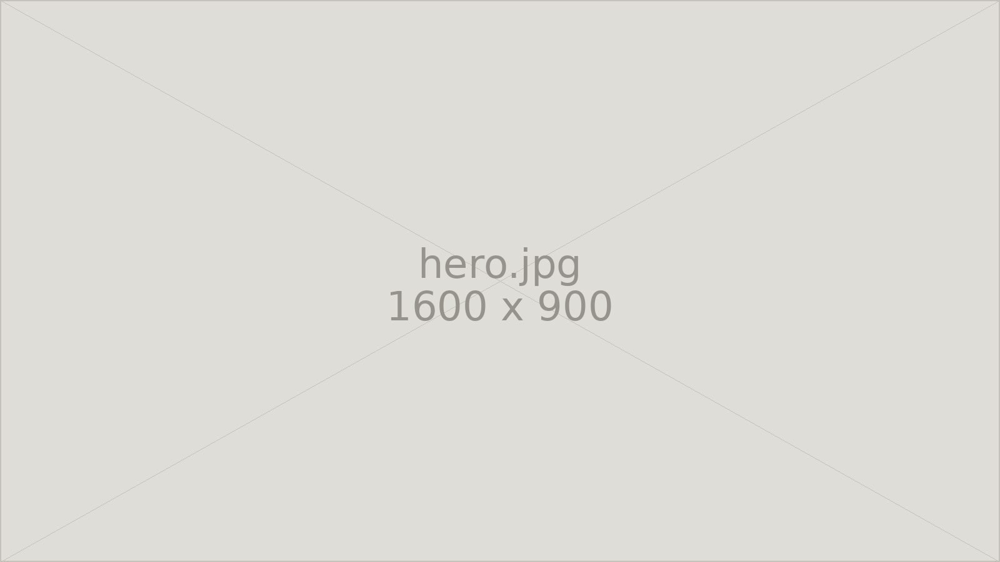
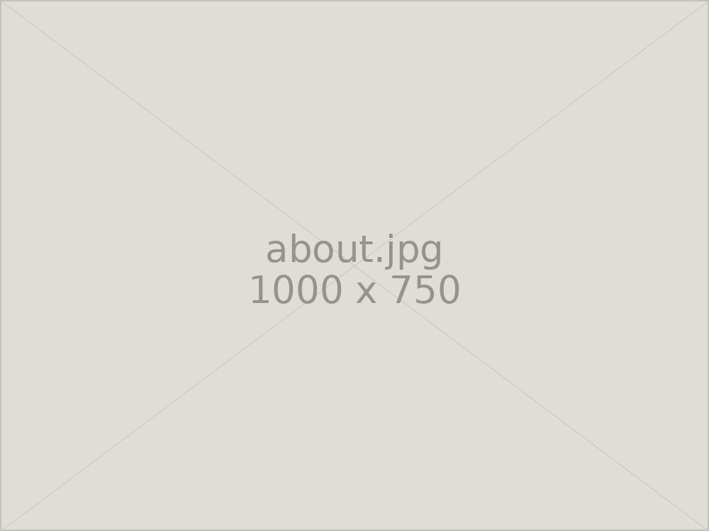

Services
承っております
新しいお墓の建立から、既存のお墓の修繕・洗浄・追加彫刻まで。石のことなら何でもご相談ください。
About us
オーダーメイドのお墓づくりに力を入れています
長年の経験と知識を活かし、ご希望に合わせたお墓を丁寧に、心を込めてお作りします。石の種類、形、彫る文字のひとつひとつまで、ご家族のお考えをうかがいながら決めてまいります。

Contact
お気軽にご相談ください
お見積り・ご相談は無料です。まずはお電話でお聞かせください。
営業時間 8:00〜17:00 ／ 定休日 毎月14・15日、土日
FAX 03-3333-8452